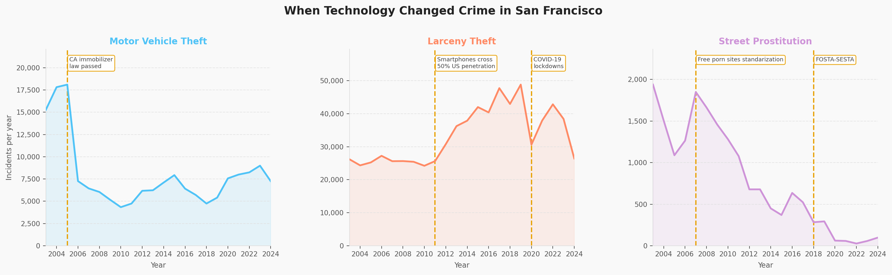

Technology & Crime · Twenty Years of Data
Three of the sharpest shifts in San Francisco crime over two decades were not driven by policing. They were driven by technology: an engine chip, a smartphone, a law aimed at a website.
This page analyzes crime data from San Francisco covering the period between 2003 and 2024. The dataset is based on SFPD police incident reports and contains detailed information on each recorded incident: crime type, location, date, time, and more. It is worth noting upfront that this data reflects reported incidents only, meaning that changes in enforcement priorities or reporting behaviour can look exactly like changes in crime itself.
After working through this data, I noticed that three of the sharpest shifts across two decades share something unexpected: they appear to be driven by technological change. The crimes I will focus on are motor vehicle theft, larceny theft, and street prostitution. In the final section, I expand the view to show more crime types alongside other technology-related events, so you can explore the data yourself and look for connections I may have missed.

Even though engine immobilizers were invented well before 2005, they were not standardised in commercial vehicles until that year. As the data shows, a clear drop begins around 2005–2006, when California enforced a law requiring all new cars to include this technology. An immobilizer prevents the engine from starting without the correct electronic key, making the old technique of hotwiring essentially obsolete.
What is interesting is that while the law was the direct trigger, without the prior invention and standardisation of the technology it would never have been possible. It is also worth mentioning that some of the remaining thefts are likely older vehicles that did not have this system installed. Depending on whether accessories like radios or wheels are included in this crime category, newer security measures added to modern cars may have also made those forms of theft more difficult, contributing further to the decline.
With larceny theft, roughly the opposite happened. The standardisation of the smartphone meant that people were constantly carrying a high-value device that was easy to steal, small enough to pocket, and at the time had limited tracking or resale prevention measures. As a result, we can see larceny theft increase dramatically after smartphones crossed 50% penetration in the US around 2011–2012.
It is true that larceny covers a broader range of thefts: wallets, purses, laptops, and other personal belongings are all included in these numbers. But given the scale of the rise and how rapidly smartphones became part of everyday life, it is reasonable to argue that they had a significant role in driving this trend. Over time some measures were applied, such as Apple's Activation Lock with iOS 7 in 2013, though users found ways around these fairly regularly, which is likely why the numbers fluctuate rather than drop cleanly. Then COVID-19 in 2020 emptied the streets entirely, and the count dropped sharply as there were simply fewer people outside to steal from.
With street prostitution, the drop begins earlier than the enforcement laws that are often cited. Around 2011, a shift in online content consumption meant that free platforms began to dominate, with 80–90% of users accessing content at no cost. As pornography became easier to access, society felt less need to use prostitution as a means of personal satisfaction, which likely contributed to the early decline visible in the data from around that period.
Then in 2018, FOSTA-SESTA was signed into law, targeting platforms that hosted sex work advertising. The effect on recorded street prostitution was dramatic: incidents fell to near zero and have remained there since. The critical point, and the one I think matters most, is that this almost certainly does not mean the activity itself disappeared. What disappeared is what the police could see and count. The data does not show a crime going away, it shows a crime becoming invisible.
The previous section showed how technology changed total crime numbers across San Francisco. Here I want to look at whether those changes were felt equally across districts with different income levels and living standards.
One observation stands out in the motor vehicle theft map: even as the overall count drops, the ratio for districts like Mission actually increases. This could suggest that newer security technologies were adopted faster in higher-income districts, where newer cars were more common, while lower-income areas continued using older vehicles without these protections. The technology reduced theft overall, but it may have concentrated what remained in areas with less access to it.
For larceny, the pattern is different. Theft is more evenly spread and in some cases higher in wealthier districts, which makes sense since richer areas have more valuable assets and more foot traffic.
For prostitution, the concentration tends to stay within the same districts over time, though the specific district that stands out shifts after the platform changes take effect.
In this final section I want to hand the exploration over to you. The chart shows how several crime types have evolved over time, alongside a set of technology events that I believe are plausibly connected to some of the trends. I encourage you to try and find relationships yourself: select a crime, select an event, and see if the timing lines up.
I have put forward the ones I found most compelling, but there are certainly others. You might even think of an event I have not included and notice it seems to align with something in the data. That is kind of the point.
Technology can have a significant and direct impact on crime, in both directions. Some inventions create new opportunities for crime while others close them off, and both effects tend to persist until some kind of response catches up: whether that is a security measure, a law, or something as blunt as a pandemic.
In a world increasingly shaped by large technology companies whose value depends on new products, it is worth asking whether these companies should be required to consider the potential impact of their inventions on crime before they are standardised. Is that even measurable in advance? Looking at past events and their effects, perhaps it is possible to make some predictions. Artificial intelligence is an obvious case. When powerful tools are made widely accessible, they can be used for investigation and prevention just as easily as they can be used for harm. Have the people building these systems thought seriously about that? Or are they focused on the revenue?
I do not have a clean answer to that. But I think looking at what technology has already done to crime in the past gives you enough to form your own.